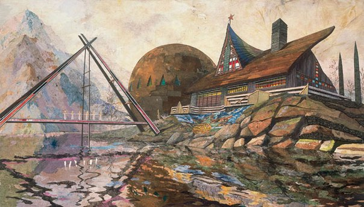

Метамодернизм
Эта статья сова по себе очень постпостметаметаиронична, поскольку она не про мемы вовсе.Что же такое метамодернизм? Метамодернизм - это, по сути, постпостмодернизм (слушаем монеточку - она всё по полочкам раскидала). Представляет собой направление искусства, являющееся наследником и, фактически, потомком постмодернизма. По мнению упомянутых в прошлой статье оптимистов, метамодернизм - состояние общества и его культура после окончания Холодной войны - то бишь после 1990-х годов. 
Метамодернизм провозглашает цикличность мироздания, а также так называемый "конец истории" - момент, после которого история человечества резко замедлится, либо остановится, либо просто уйдёт в цикл и будет более недостаточно интересна для того, чтобы её фиксировать. По мнению метамодернистов, такое состояние человеческой истории будет достигнуто тогда, когда уйдут все противоречия между нациями, народами и их культурами. Некоторые даже считают, что это уже наступило, но мир жесток - торговые центры не за глобализацию взрываются, отнюдь.
Есть мнение, что метамодернизм - попытка вернуться к абортированному в 20-е годы двадцатого века модернизму классическому. Также есть мнение, что никакого постмодернизма не было вовсе (но почему же тогда мета - не пост? На этот вопрос отвечать приверженцы этого мнения, я думаю, не захотят).